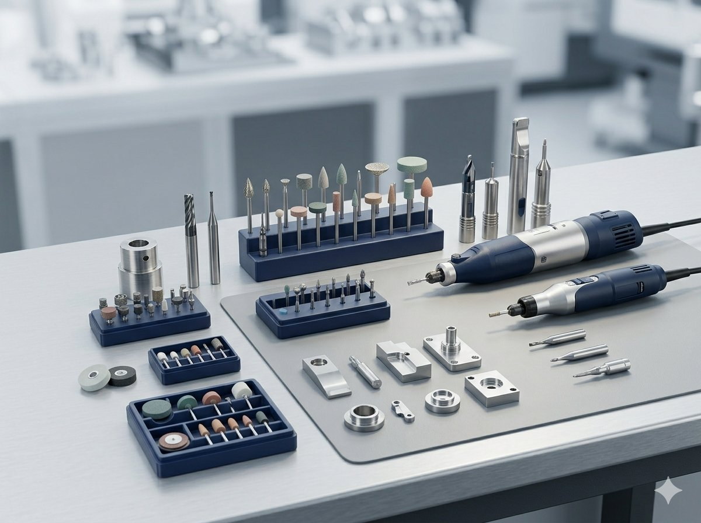
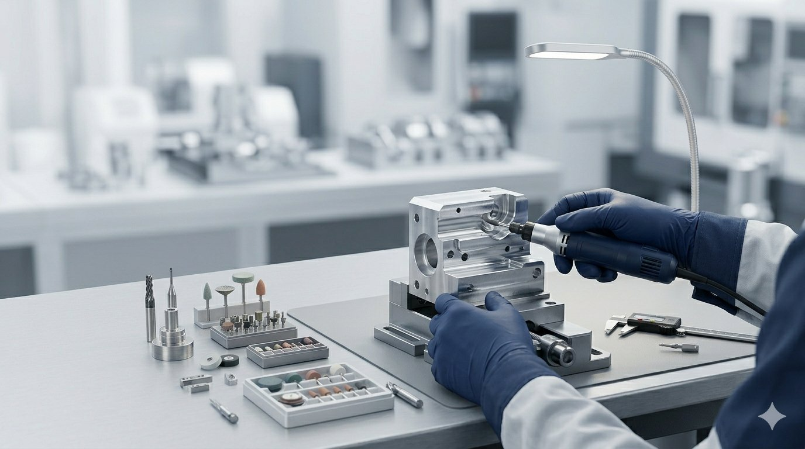
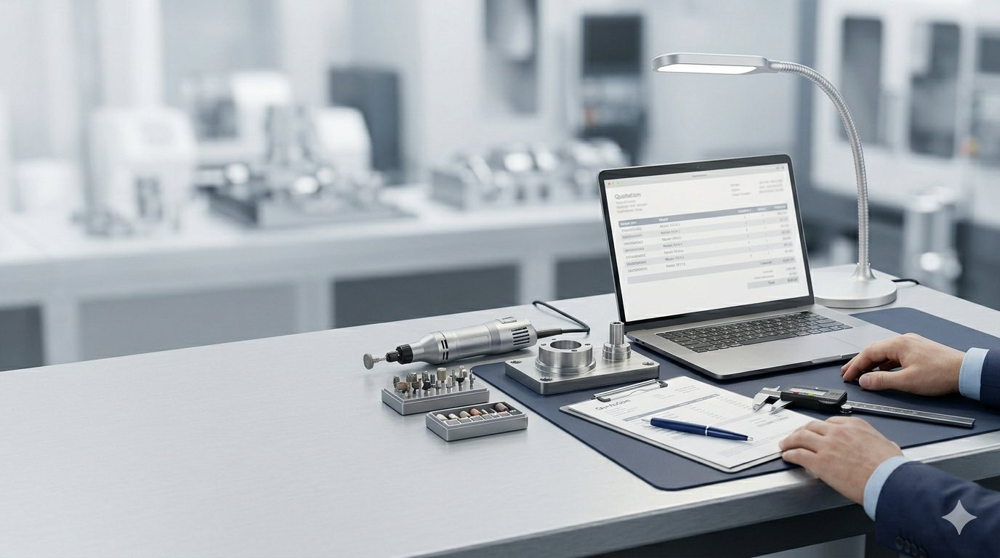

製造現場で使用される各種工具・周辺部材について、型番指定でのお見積もり、用途に応じた確認、小ロット調達、補修用工具のご相談に対応いたします。

切る、削る、磨く、穴あけ、バリ取り、仕上げ加工など、製造現場の細かな作業に必要な工具・周辺部材の調達をご相談いただけます。

01
必要な工具や部材の型番、数量、希望納期をお知らせいただければ、確認のうえお見積もりいたします。型番が分からない場合も、用途をご共有いただければ確認可能な範囲で対応します。
02
大量発注だけでなく、補修用、予備品、現場単位での小ロット調達もご相談いただけます。
03
当社では電子基板、実装、ハーネス、電子部品調達にも対応しているため、製造現場周辺の調達相談をまとめて承ることが可能です。
04
製造業、加工業、設備保全部門など、法人のお客様との継続的な調達・見積対応にも対応いたします。
お見積もりや在庫確認をご希望の場合は、以下の情報を可能な範囲でお知らせください。型番が不明な場合でも、用途や現場での使用内容をご共有いただければ、確認可能な範囲で対応いたします。
KANEXでは、精密工具・研磨工具の販売に加え、電子基板の設計・製作・実装、ハーネス、電子部品調達にも対応しています。
製造現場で使用する工具と、基板・電子部品の調達をまとめてご相談いただくことも可能です。
電子基板・ハーネス事業を見る
製造現場で使用する精密電動工具、研磨工具、切削工具、砥石、ダイヤモンド工具、各種先端工具について、型番指定・小ロット・補修用・継続取引のご相談を承ります。